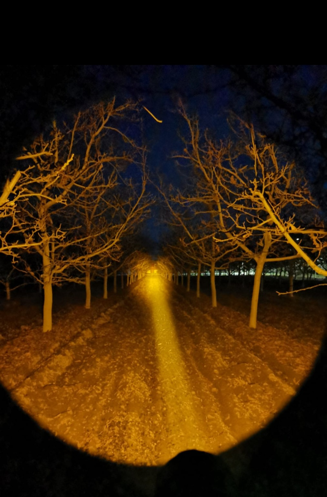

Convoy Yellow
Convoy Yellow C
$35.000
Linterna Convoy de luz amarilla ideal para uso nocturno, observación y recorridos en terreno. Su luz lanzadora permite concentrar el haz a mayor distancia con buena visibilidad.
Tipo de luzLuz amarilla
HazLanzadora
Alcance300 mts
Autonomía1,30 hrs con pila Liitokala
Batería18650 / No incluye pila
Longitud142 mm
Diámetro cabeza44,5 mm
Diámetro cuerpo25,2 mm
Peso145 g